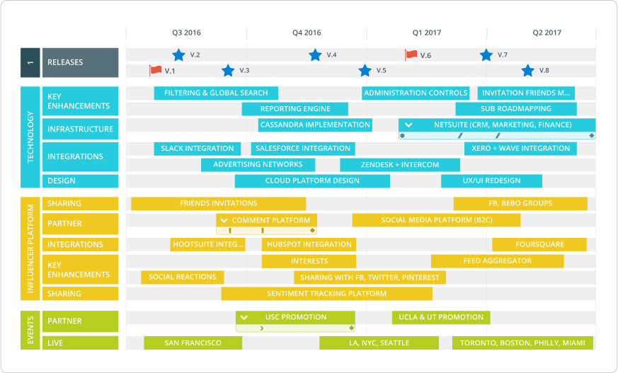
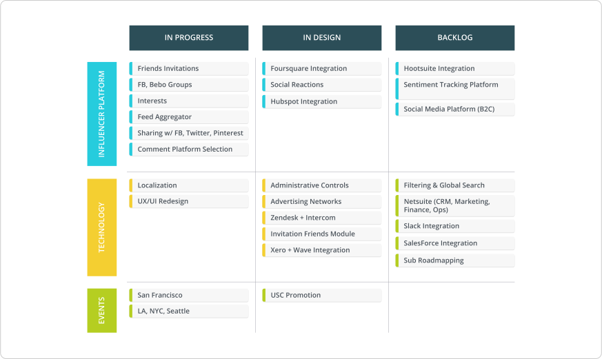

“I spend all this time working on my product roadmap, then it gets picked apart. How can I wrangle execs in the roadmapping process?”
It’s one of the questions we hear most often from product managers and other roadmap-ers when it comes to roadmapping. A product manager, for example, has one plan but executives see things differently. They butt heads, tweak plans, shift priorities, and ultimately who knows if the right thing gets executed. Or gets executed well.
The process isn’t easy, but we wanted to delve deeper into executive buy-in, since it can be particularly challenging. Here’s a quick survival guide for your next exec meeting.
Pushback isn’t a bad thing
It can be frustrating when your airtight roadmap gets punctured by an exec. But the goal of the roadmapping process isn’t to present a perfect plan that everyone immediately loves. Getting feedback — even negative feedback — is the goal. The purpose of presenting your roadmap, then iterating (and iterating again) is to get everyone on the same page. It’s about managing and aligning expectations. Yes, the snags can be defeating. But if no one is criticizing, no one is listening. Think of it as a opportunity to fill gaps in your knowledge about the other departments you work with.
Before showing your roadmap to an exec…
There’s no point in showing your roadmap to an executive until you have a shared understanding of where you want the roadmap to take you. Generally, this means that everyone in the room understands:
Company vision
What’s the longterm goal of the company? Is it to grow as big as possible, or is it to get acquired? Are you after exponential growth or a more gradual trajectory? Have there been significant changes in company vision lately? These are the types of questions that should be understood before the roadmap meeting.
Long-term strategy
Let’s use product as an example. What problem does your product solve for? What’s your plan of attack or differentiation in the market? Is your goal to have 10 customers paying $1,000,000 per year, or 1,000,000 customers paying $10 per year? These questions will heavily impact what’s on your product roadmap.
Prioritization method
How do you prioritize? Having an established prioritization method, and being transparent about that method, is essential when explaining how you built your roadmap in the first place.
Each of these points is an article unto itself, so we’re not going to get into too much detail here. (The purpose of this post is to discuss what happens when you show the first iteration of your roadmap to an exec.)
Just keep in mind that you’ll need a strong sense of these three items to productively communicate with an executive.
Know your audience
Speaking of executives, remember that they are not all clones of each other. The CEO does not have the same concerns as the CPO, who does not have the same priorities as the CMO. Yes, you’re all working towards the same company vision — but you’re each chipping away at different areas of that vision. Your roadmap discussion should be tailored to the specialization of whichever exec happens to be in the room with you.
Here are a few things to keep in mind when addressing a few different types of execs:
The CEO
Especially at startups, the CEO tends to be pretty hands-on with most facets of the company, and especially with the product roadmap. CEOs think high-level and inter-departmental. To continue with the product roadmapping example, the CEO is not just going to want to see what features you’re adding, but rather how the evolution of the product will touch the other teams and grow the business. They also want to understand risk and internal efficiencies (or inefficiencies).
The sales exec
Sales tends to be more timeline-focused. And they have lots of competing demands. Come prepared to show what they’ll be able to offer customers or how your plan will affect what they can offer customers, how you arrived at that decision (including any tradeoffs that were made), and how you’re allocating resources (in case they make demands). Be sure to unearth any promises sales has made to customers (that’s one of the main reasons roadmaps get bumped off course).
The marketing exec
They don’t need to know every detail of how a feature, for example, is going to get built, but they do need to know the stories they can tell. As best you can, flag what’s coming up in the long-term so they can prepare.
The product exec
Roadmapping is always about getting feedback, but that’s especially relevant when the exec is a fellow product manager. Here’s where you can really get in the weeds on your market. Explain what direction your market is going, and how your roadmap builds a competitive advantage.
Along with not telling each exec the same thing, you also don’t have to show them the same thing. We recommend tailoring your roadmap to its specific audience.
For example, your complete product roadmap might look something like this when plotted on a timeline:

However, when showing your roadmap to an exec in marketing or sales, you could show the same data plotted according to what’s in progress, in design or in the backlog. This is a simple framework that can go a long way when it comes to managing expectations.

Psst... make this roadmap your own by getting Roadmunk's free product roadmap template here.
Regardless of how you build or format your specific roadmap, remember: tailor it to your specific audience. Our template library can help with creating the right roadmap for the right audience.
Common reasons for pushback
Why would an executive question your roadmap? A good way to prevent pushback: be prepared for some of the obvious points of contention.
1. They don’t think the roadmap is aggressive enough
Is that all? Shouldn’t you be able to complete, oh, at least three more features this quarter? Obviously, everyone wants more and they want it last week. Executives are highly incentivized to over-deliver—and they won’t be timid about asking for “extra.”
Quick tip:
Be very transparent about resourcing. Explain how your available manpower will be used to execute each item on your roadmap. In fact, show resources right on your roadmap. Also, show history. Remind them how long past features took to execute, and how the new items will compare.
2. They think the roadmap is too aggressive (i.e. unrealistic)
One thing you don’t want to do: over-promise and under-deliver. If an exec sees a roadmap that just isn’t doable, they are likely to push back. Especially if sales will be sharing their roadmap with clients.
Quick tip:
This is most commonly a problem for more junior PMs who don’t yet understand the cadence of their team. Take the feedback, apply it… and learn for next time.
3. They have their own agenda
Each member of the exec team has their own goals they have to achieve. This is the filter they’ll view your roadmap through.
Quick tip:
Long before you present your roadmap to an exec, make sure you know if they have any unspoken-for priorities. That way these items can be properly assessed and prioritized, without derailing your plans.
4. Specifically for PMs, they don’t understand the technical side
This often goes hand-in-hand with number 1. A non-technical executive might look at your roadmap and wonder: why is everything taking so long? Do we really need that many resources allocated to technical maintenance and debt?
Quick tip:
From Day 1, explain the process. The explain it again. If an executive doesn’t have a technical background, they probably have never been exposed to the huge amount of resources that must go into simply maintaining a system. Remember, product managers are translators: it’s your job to interpret your roadmap for each department.
5. They want to see more of the big picture
Really early products and plans can get away with a roadmap that’s just a list of features or projects. But once your strategy begins to mature, you’re going to have to account for other departments, dependencies and risks, and be able to position your roadmap within the wider market. If an exec doesn’t see this on the roadmap, they’ll probably ask about it.
Quick tip:
Check yourself on granularity. Yes, you need to know every detail about how a feature will be built. But does the executive? Be able to explain your roadmap not just in terms of how/why you prioritized the way you did, but how this will lead to your specific goals within your specific market.
6. They’re jerks: Sometimes people just suck
It wouldn’t be the first time an executive was confrontational or egocentric. It can be very challenging when someone pushes back on your roadmap because they just, well, want to be difficult.
Quick tip:
Fight aggression with questions. Ask what they would like to be different. This doesn’t mean saying yes, but make yourself open to the conversation — then explain the tradeoffs if you execute “their” way.
A few more things to keep in mind
Seasoned product managers are world-class communicators. But it takes work to get there. Here are a few key points to keep in mind when presenting your product roadmap to an executive.
1. Know your market better than anyone else
At least, that’s the goal. Executives will often “win” a roadmapping debate because they have been in the business longer and simply know the landscape better. Your goal: learn everything you don’t know, everything they know, and more. Talk to more customers than them, keep tabs on your competitors more closely than them, and be the expert on your market.
2. Be radically transparent
Don’t just show your roadmap. Explain how you got there. Resourcing, risk and prioritization should all be crystal clear. Then you’ll be able to show how all the pieces will move if anything changes.
3. Show tradeoffs
When a change to your roadmap is suggested, make sure you articulate the tradeoffs. Sure, we could do X—but we’d have to sacrifice Y. What will the domino effect be from that? Be open to any change—but make sure you articulate the full picture of the consequences.
4. Remind them of history
Not sure how long something will take? Look backwards. Due to the cost of maintaining your existing tech, features often take longer to build over time, not faster. Come to the conversation with both a strong sense of where you’re going, and knowledge of your past.
5. Tailor what you show
Not all execs are the same. And they shouldn’t all see the same version of your roadmap. To ensure a successful roadmapping process, show each stakeholder the information that best applies to them.
Remember: feedback isn’t a bad thing! Feedback is what you want when presenting a roadmap. If you’re not getting feedback (even bad feedback), no one is listening.